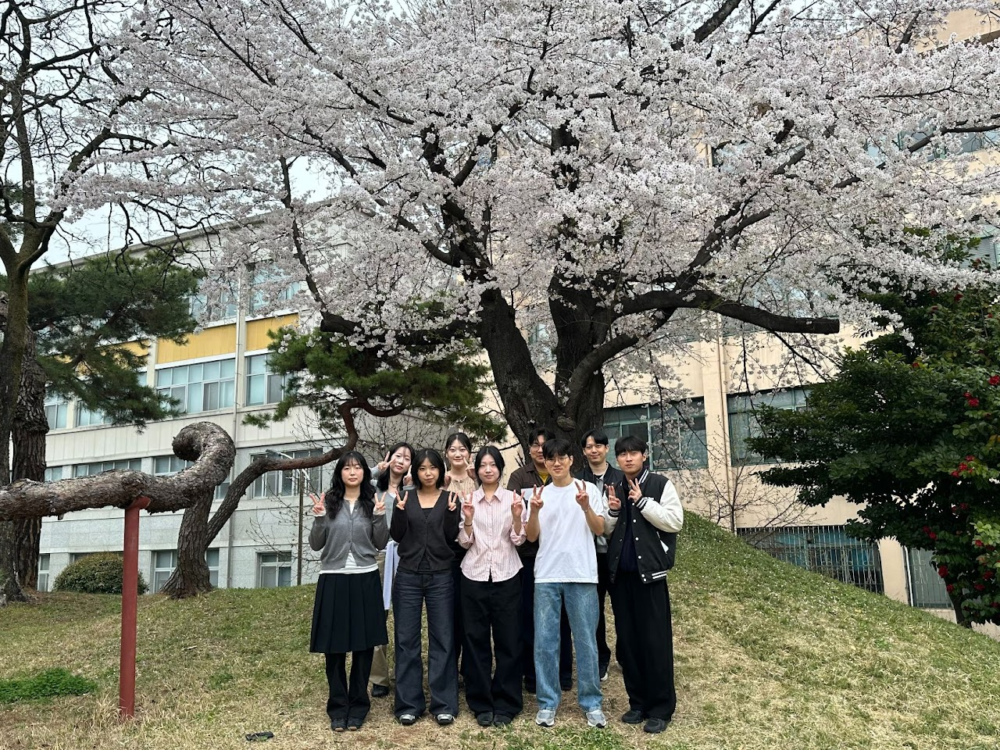

본문 바로가기
식품가공및푸드테크연구실
Chonnam National University
Menu
Home
Research
Members
Principal Investigator
Students
Research Outputs
Publications
Research Projects
Patents & Technology Transfer
Activities
Contact

전남대학교 식품공학과
식품가공및푸드테크연구실
Notice
등록된 공지가 없습니다.
Research Areas
View Research →
01 / PROCESSING
Food Processing
가공 · 구조 · 품질
02 / FOODTECH
FoodTech
측정 · 데이터 · 분석
Recent Publications
View Research Outputs →
논문 목록을 불러오는 중입니다.